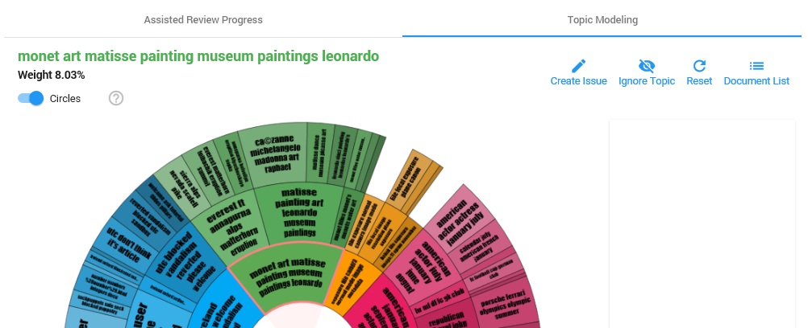

Assisted review with Topic Modeling
Prerequisites
-
A project with topic modeling and no issues has been created.
Instructions
- Select the Topic Modeling tab and select a topic.

- To view the documents in this topic, select the Document List button.

- Review the documents in this topic.
- Return to Assisted Review.
- Create an issue for topics that are identified as responsive.

- Define the issue name, a description for the issue and the batch size (size of the initial training set):

- Click Save.
- Repeat step 1 to 7 for other topics that are displayed in the Topic Modeling tab.